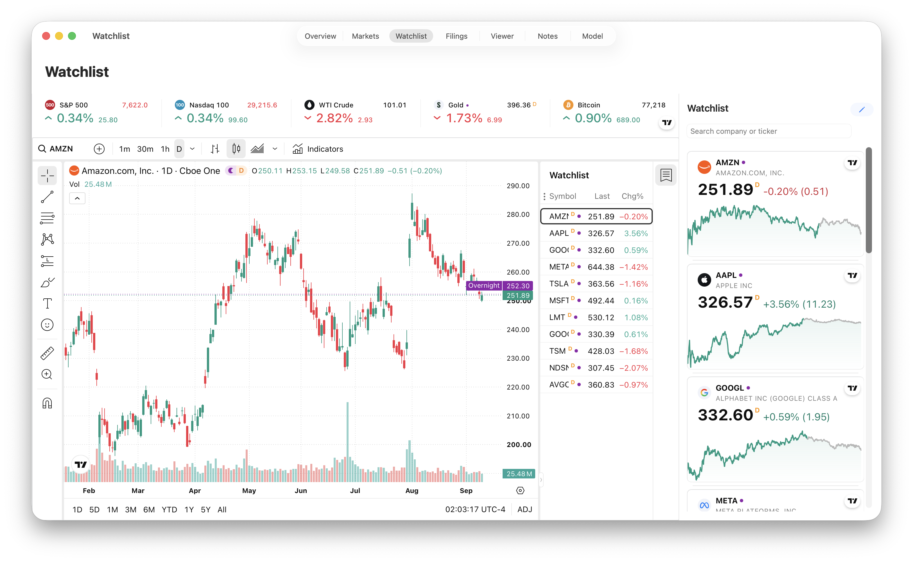
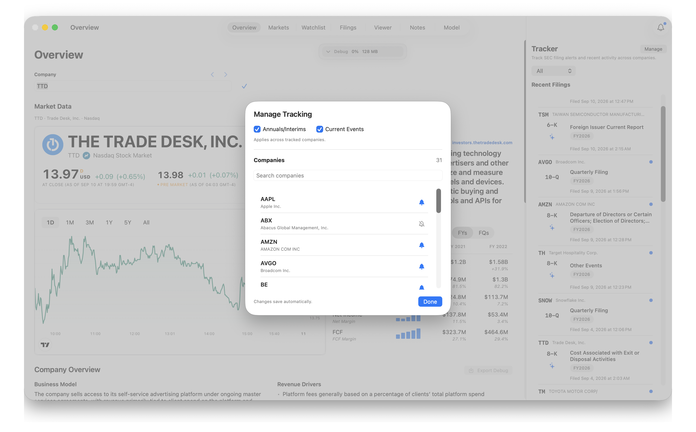

FilrAI Documentation
Watchlists & Filing Tracker
Following companies and keeping track of their disclosures.
Last updated
Managing watchlists
Organize companies into watchlists and select a company card to load its chart.

Lists
Click the watchlist name above the company cards to switch lists, create a New Watchlist, or delete a list. Double-click the name to rename it.
Companies
Search by company name or ticker in the sidebar to add a company to the selected list. You can also add companies from Overview.
Edit to reorder or remove companies in the selected watchlist.
Tracking companies
Companies added to a watchlist are included in filing tracking. Open the Tracker with the bell icon, then choose a watchlist or All.
Select Manage to choose what filings and companies are tracked.

Recent filings & unread indicators
Select a filing to open it in the Viewer and mark it read. Blue dots identify unread filings. In a company’s view, Mark All Read clears its unread status.
Filing summaries
Generate an AI summary of current events.
Refresh & notifications
Keep FilrAI running with an internet connection to receive new filing notifications, even in the background. New filings appear in the Tracker; macOS notifications require your permission.
After you quit and reopen FilrAI, it checks for missed filings matching your tracking selections from the past 30 days and groups notifications by company.
Allow FilrAI notifications in macOS System Settings → Notifications → FilrAI. Filings still appear in the Tracker when notification permission is off. For the bell indicator’s behavior, see Settings & preferences.